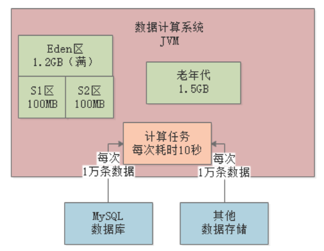
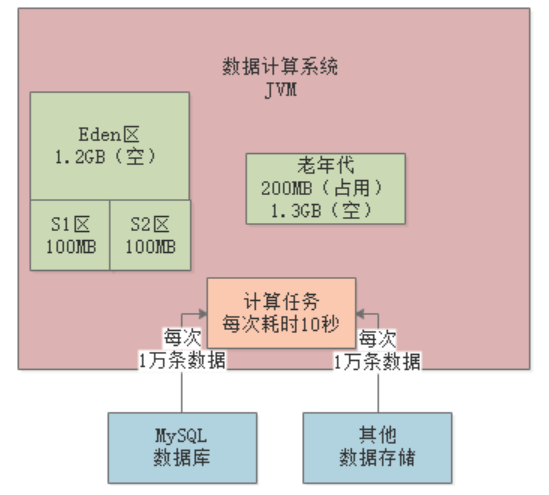

JVM实战（21）——jstat实战（2）
一、简介
上一章，我们通过jstat命令分析了BI系统中新生代对象的GC情况，也就是Young GC。本章，我们再来通过jstat命令分析下Full GC的情况。
1.1 案例背景
假设现在生产环境有一套“数据计算系统”，不停地从MySQL等各类数据源提取数据到内存中进行计算，系统是分布式的。
每个节点（机器）每分钟执行100次操作（提取数据并计算，每次操作耗时10s），每次操作1万条数据，每条数据大小为1KB左右，那么每次操作的数据大小就是10MB：
每台机器的配置是4核8G，JVM分配4G内存，其中新生代1.5G，老年代1.5G。
1.2 内存使用模型估算
每次操作会在Eden区分配10MB对象，以1分钟100次操作来算，那么Eden区1分钟内就会被占满：

每个计算任务处理1万条数据耗时10s，假设此时80个计算任务都结束了，还有20个计算任务共计200MB正在计算中，那么此时200MB对象是存活的，不会被Young GC回收掉：
由于任何一块Survivor区只有100MB，所以新生代中这存活的200MB对象会晋升到老年代，然后清空Eden：

如此反复，大约经过7分钟后，也就是经历了7次Young GC，此时大概有1.4G对象在老年代中：
再经过1分钟，也就是第8分钟结束时，新生代又满了，此时发现老年代可用空间已经不足（剩余100MB），比历代平均的晋升对象大小（200MB）要小，所以会直接触发一次Full GC。
Full GC会先把老年代的垃圾回收了（假设能全部回收），然后执行一次Young GC，此时Eden区存活的对象会进入老年代：
按照这种情况，每隔8分钟左右就会发生一次Full GC。Full GC的性能是很差的，所以必须进行优化，最基本的优化思路就是扩大Survivor区的内存，比如扩到200MB。这样基本就能避免对象频繁进入老年代，将Full GC频率降低到几个小时一次。
二、代码示例
我们通过一段代码来模拟下上述情况，先来看下JVM参数配置。
2.1 JVM内存参数
-XX:NewSize=104857600 -XX:MaxNewSize=104857600 -XX:InitialHeapSize=209715200 -XX:MaxHeapSize=209715200 -XX:SurvivorRatio=8 -XX:MaxTenuringThreshold=15 -XX:PretenureSizeThreshold=20971520 -XX:+UseParNewGC -XX:+UseConcMarkSweepGC -XX:+PrintGCDetails -XX:+PrintGCTimeStamps -Xloggc:gc.log
上述，我们把Java堆内存设置为200MB，其中年轻代100MB，Eden占80MB，Survivor各占10MB，老年代100MB，大对象阈值为20MB。
2.2 程序源码
public class Demo1 {
public static void main(String[] args) throws InterruptedException {
Thread.sleep(30000); // main线程休眠30s，以便jstat命令通过PID观察
while (true) {
loadData();
}
}
private static void loadData() throws InterruptedException {
byte[] data = null;
for (int i = 0; i < 4; i++) {
data = new byte[10 * 1024 * 1024]; // 10MB
}
data = null;
byte[] data1 = new byte[10 * 1024 * 1024];
byte[] data2 = new byte[10 * 1024 * 1024];
byte[] data3 = new byte[10 * 1024 * 1024];
data3 = new byte[10 * 1024 * 1024];
Thread.sleep(1000); // 模拟上述操作全部发生在1s内
}
}
上述程序代码中，每秒都会执行一次loadData()，它会首先分配4个10MB数组对象，但是立马变成垃圾；然后会有data1和data2两个10MB的数组对象被创建并一直被引用；最后，data3指向两个新创建的10MB数组对象。
总之，loadData()的目的就是为了模拟1s内创建接近80MB对象，触发Young GC的。
2.3 jstat分析
当我们启动程序后，main线程会阻塞30s，此时我们可以先通过jps命令查找当前JVM的进程ID——13740：
然后在30s内执行下述命令，统计JVM状态，每隔1s打印一次，共打印1000次：jstat -gc 13740 1000 1000
我们来看下输出结果：
首先，看下EU那列，表示Eden区的内存使用情况，刚开始一直都是6MB多的使用量，此时main线程还在阻塞中，当main线程恢复后，1秒钟就发生一次Young GC，因为Eden区只有80MB。
通过OU列，明显可以看到老年代新增了30MB对象，这就是程序中data1、data2、data3引用的存活对象，因为Eden区放不下，所以触发了Young GC，然后又发现存活对象在Survivor区也放不下，所以将转移到了老年代：
可以看到，Young GC和Full GC都特别频繁，Full GC几乎两三秒就会出现一次，而且从耗时看，Full GC平均耗时2ms左右，但是Young GC竟然又7ms，比Full GC还高：
因为上述的每次Full GC都是由Young GC的，Young GC时发现存活对象放不进Survivor，先尝试转移到老年代，但当老年代空间也不足时就会联动触发Full GC，必须等到Full GC完成后，才能将存活对象转移过去，Young GC才算完成。
三、优化
我们来对上述示例进行下优化，主要就是调整Survivor区的大小：
-XX:NewSize=209715200 -XX:MaxNewSize=209715200 -XX:InitialHeapSize=314572800 -XX:MaxHeapSize=314572800 -XX:SurvivorRatio=2 -XX:MaxTenuringThreshold=15 -XX:PretenureSizeThreshold=20971520 -XX:+UseParNewGC -XX:+UseConcMarkSweepGC -XX:+PrintGCDetails -XX:+PrintGCTimeStamps -Xloggc:gc.log
上述JVM参数，我们把Java堆内存调整为300MB，新生代占200MB，其中Eden区100MB，Survivor区各50MB，老年代100MB。
3.1 jstat分析
我们根据上述JVM参数再重新运行程序，输出结果如下：
可以看到，Young GC频率每秒1次，每次存活对象大小约20MB，Survivor区足够容纳，所以没有触发过Full GC。而且15次Young GC耗时才120ms，也就是平均每次8ms，所以对系统的运行几乎没有影响。
四、总结
本章，我们通过一个示例引出频繁Full GC的问题，并通过jstat命令观察JVM运行情况，然后对JVM进行调优，最后再通过jstat观察优化后的JVM运行情况，将系统的运行效率提升了，避免了频繁Full GC。
通过本章和前一章的两个示例，相信读者已经掌握了jstat的核心用法。从下一章开始，我们会用一系列的真实生产案例还原出各种不同的JVM优化场景，帮助大家强化对JVM性能问题进行分析和处理的能力。